The design skill that ends AI slop.
Works in Claude Code, Codex and OpenCode. One line to install.
npx skills add nutlope/hallmark -g


One prompt, two pages
On the left, Opus 5.5 alone from the prompt. On the right, the same prompt as a Hallmark theme page.
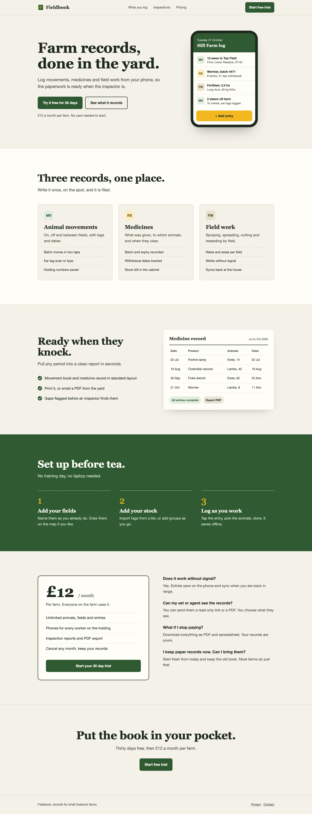

The issue counts come from Hallmark’s linter. Scroll to read both pages, or drag the line.
It designs before it codes
What happens between your sentence and the page.
-
Asks for your material
Your photos, real numbers, screenshots of your app. It never makes them up.
-
Deals one of 48 themes
It picks three that fit your prompt. Say custom and it designs from scratch.
-
Lays out the page from scratch
The sections and their order change on every build.
-
Checks its own work
It lints the page in a real browser, then reviews it with fresh eyes.
Forty-eight themes to start from
Each one is a paper, a set of type, a palette and a way with photographs. The layout is up to the build.
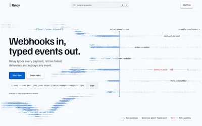
Cobalt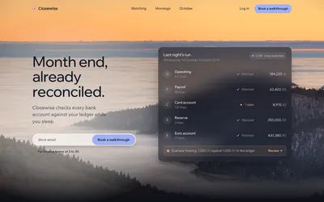
Dusk Furrow
Furrow- Studio
 Atelier
Atelier Ribbon
Ribbon Dose
Dose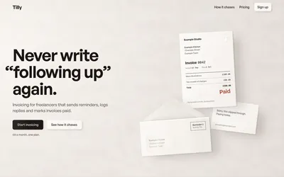
Coral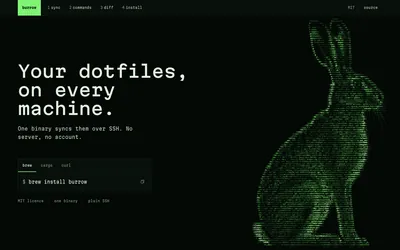
Terminal Hedgerow
Hedgerow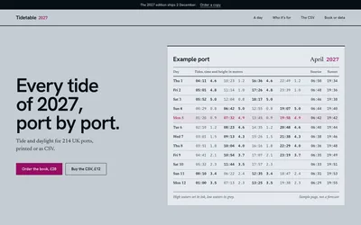
Almanac Arcade
Arcade Bloom
Bloom Blueprint
Blueprint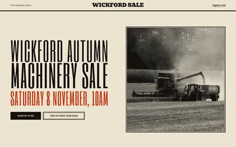
Broadside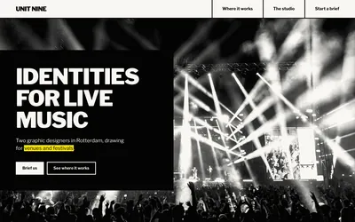
Brutal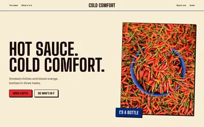
Carnival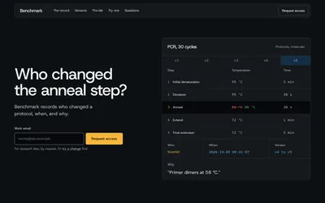
Console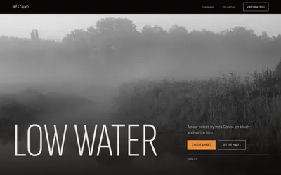
Darkroom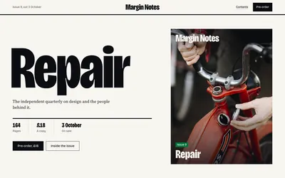
Editorial Formwork
Formwork Garden
Garden Grid
Grid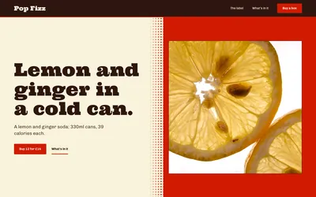
Halftone- Hum
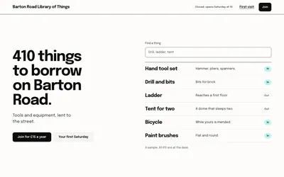
Ink Kiln
Kiln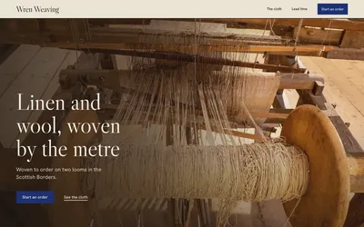
Loom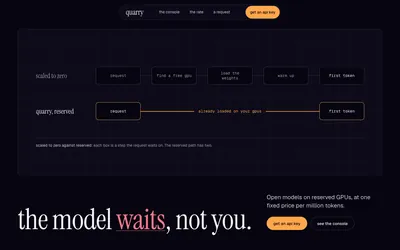
Lumen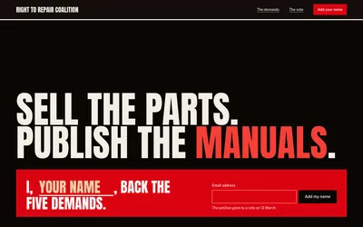
Manifesto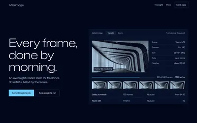
Midnight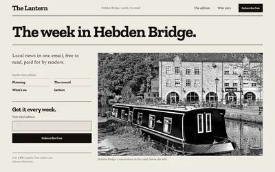
Newsprint Overprint
Overprint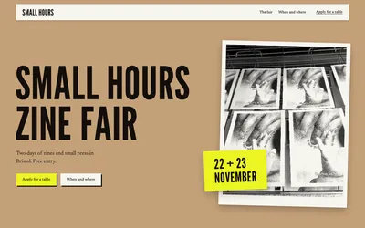
Paste-up Piste
Piste Rim
Rim Riso
Riso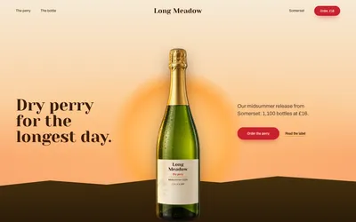
Solstice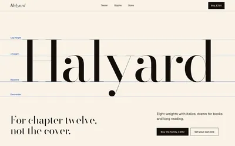
Specimen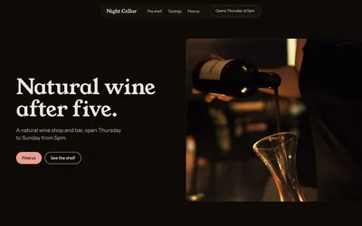
Spore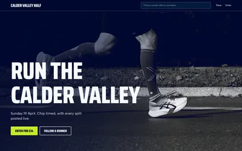
Sport Squeeze
Squeeze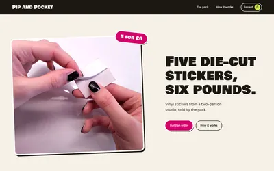
Sticker Terrazzo
Terrazzo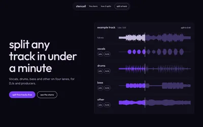
Ultraviolet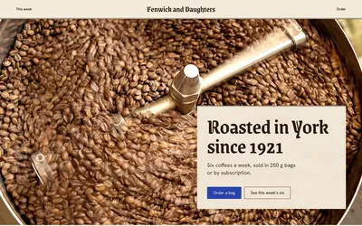
Vellum Wayfind
Wayfind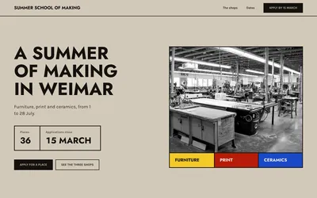
Werkstatt
Same theme, different pages
Two prompts in Kiln and two in Midnight. Each build chose its own structure.


Questions
Does it need an API key?
No. Photographs come from its own library of openly licensed pictures. An image key is optional.
Can it redesign a site I already have?
Yes, when you ask by name: /hallmark redesign ./site. It keeps your content, links and forms and rebuilds how the page looks. It never touches an existing site on its own.
Can I skip the themes?
Yes. Ask for a custom page and it designs from your prompt alone, with the same rules and checks.
Can it show my actual app?
Yes. Give it the URL or the folder and it runs the app and takes the screenshots itself.
Can it follow my design system?
Yes. It reads your tokens and design.md before it designs anything.
Where do the photographs come from?
Openly licensed photographs on Wikimedia Commons, credited on every page that uses them.
Will two people get the same page?
No. Each build draws its own shape, hero, nav and footer.
Made with Hallmark
Builds and theme pages, each from a one-line prompt. Drag the wheel to look around.